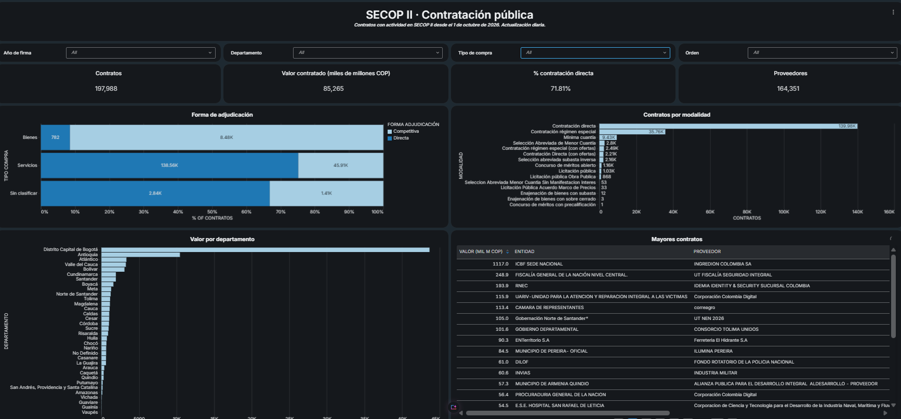

Public procurement lakehouse (SECOP II) with CI/CD
A daily pipeline on Colombia's public procurement data, from the public API to a dashboard. Terraform declares the infrastructure, dbt runs in a Docker image, and every pull request is tested in ephemeral schemas before it reaches production.
Finding
71.8%of ~198,000 contracts were awarded directly, without a competitive process
31.8%of the total contract value went through direct awards
Direct awards dominate by count, not by money. Most are individual service contracts, which the law allows to be awarded directly; large contracts mostly go through competitive processes.